Why do the feet slide, and how does leg IK pin them?#
What you will learn
How to measure foot slide and floor penetration, and why a motion that looks fine joint by joint still skates.
How to detect when a foot is planted, using height and speed thresholds with hysteresis.
What a root-level foot lock can fix, and where two planted feet defeat it.
How analytic two-bone inverse kinematics (IK) moves an ankle to a target, with guards for unreachable targets and for knees that would bend backwards.
Why a pin must be blended in and out, and why a world-space slide number can say “fixed” while the picture has not changed.
Prerequisites: Lesson 3a (forward kinematics) and Lesson 3b (skinning). The avatar of Part 5 is driven by giving it new poses. This lesson is about those poses, so it needs no fitted avatar: every figure uses the toy actor or its skeleton.
The tools of this part live in course_utils/motion_tools.py, imported as mo.
1. A walk that skates#
A pose is a set of joint rotations plus one translation for the whole body. Nothing in that description says that a foot on the floor must stay where it is. The toy walk makes the point. It swings the hips with a sine wave and moves the root forward at a constant speed, and nobody checked that the two agree.
We need two measurements. Let \(\mathbf{s}_f(t)\) be the horizontal position of the sole centre of foot \(f\) in frame \(t\), \(h_f(t)\) the height of its lowest point, and \(c_f(t) \in \{0, 1\}\) a contact label that says whether the foot is planted. With \(\Delta t\) the time between frames,
A planted foot should have zero slide, and no sole should go below the floor \(y = 0\).
FPS = 30.0
poses, trans = cu.motion("walk", 96, cycles=2.0) # two walking cycles, 3.2 seconds
f_walk = mo.feet(poses, trans, fps=FPS) # sole centres, sole heights, ankles, sole speed
print("sole xz", tuple(f_walk.xz.shape), "| height", tuple(f_walk.height.shape), "| speed", tuple(f_walk.speed.shape))
frames = cu.to_np(torch.arange(len(poses)))
fig, axes = plt.subplots(1, 2, figsize=(9.0, 3.0))
for foot, (name, style) in enumerate((("left", "-"), ("right", "--"))):
axes[0].plot(frames, cu.to_np(f_walk.xz[:, foot, 1]), style, color=cu.COLORS["skeleton"], label=f"{name} sole")
axes[1].plot(frames, 100 * cu.to_np(f_walk.height[:, foot]), style, color=cu.COLORS["skeleton"], label=f"{name} sole")
axes[0].set_xlabel("frame"); axes[0].set_ylabel("forward position z (m)"); axes[0].legend()
axes[1].set_xlabel("frame"); axes[1].set_ylabel("sole height (cm)"); axes[1].set_ylim(-0.3, 8.5)
axes[1].legend(ncol=2, loc="upper center");
sole xz (96, 2, 2) | height (96, 2) | speed (96, 2)
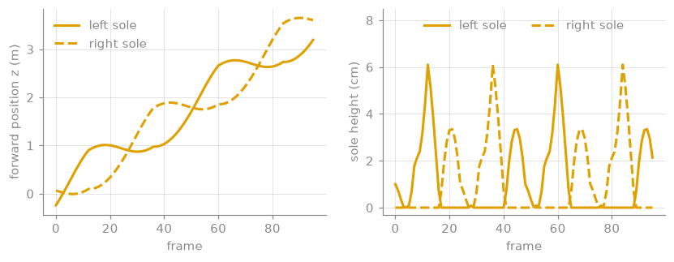
Look at the left panel while a foot is on the floor (height zero in the right panel). A planted foot should draw a flat step. These steps are tilted: the foot keeps creeping forward while it carries the body. The next cell puts a number on it. The contact label used here is simple, low and not fast; Section 2 builds it properly.
DETECT = dict(h_on=0.03, h_off=0.06, v_on=0.8, v_off=1.2) # metres and metres per second
con_ref = mo.detect_contact(f_walk.height, f_walk.speed, **DETECT) # reference labels from the noise-free walk
def report(label, poses, trans, contact=None):
"""Slide and penetration of a motion, scored on the reference contact labels."""
f = mo.feet(poses, trans, fps=FPS)
s = mo.foot_slide(f.xz, con_ref if contact is None else contact, FPS)
p = mo.penetration(f.height)
print(f"{label:<26s} slide median {s['median']:6.1f} p90 {s['p90']:6.1f} mm/s | "
f"deepest penetration {p['max_mm']:5.1f} mm")
return s, p
s_proc, _ = report("procedural walk", poses, trans)
assert s_proc["median"] > 100, "the procedural walk should skate visibly"
procedural walk slide median 415.0 p90 804.8 mm/s | deepest penetration 0.0 mm
Hundreds of millimetres per second is not subtle. The real project met the same thing in its hand-written moves (see In the real pipeline).
Motion recovered from video has a second problem. A tracker’s errors are small rotations at every joint and a
small error of the root position. Most of that error is slow (it lasts several frames) with some jitter on
top. A two-degree error at the hip moves the foot by about three centimetres, because the leg is a long
lever. mo.tracker_noise imitates this. In the toy we know the clean motion, so we can also keep the reference
contact labels con_ref; a real pipeline has to estimate them.
poses_t, trans_t = mo.tracker_noise(poses, trans, joint_deg=1.5, root_m=0.01, seed=1)
s_raw, p_raw = report("tracked walk", poses_t, trans_t)
f_t = mo.feet(poses_t, trans_t, fps=FPS)
assert p_raw["max_mm"] > 5, "the tracked walk should push a foot through the floor"
tracked walk slide median 487.2 p90 848.1 mm/s | deepest penetration 34.2 mm
The tracked walk skates at least as much, and now the feet also sink into the floor and float above it. Here is what that looks like. The camera stands still at the side, and each picture is the average of seven frames taken while the left foot (the one nearer the camera) is supposed to be planted. Anything that stays still is sharp in such an average.
a_st, b_st = mo.runs(con_ref[:, 0])[0] # the first planted run of the left foot
stance = list(range(a_st + 3, b_st - 3, 3))[:7]
z_mid = float(f_walk.xz[(a_st + b_st) // 2, 0, 1])
cam_feet = cu.look_at(eye=(4.5, 0.45, z_mid), target=(0.0, 0.38, z_mid), fov_deg=17, size=160)
actor = cu.ToyActor()
def stance_average(poses, trans):
return torch.stack([actor.render(cam_feet, poses[t], trans[t])[0] for t in stance]).mean(0)
avg_raw = stance_average(poses_t, trans_t)
cu.show_images([actor.render(cam_feet, poses_t[stance[3]], trans_t[stance[3]])[0], avg_raw],
["one frame of the stance", f"average of {len(stance)} stance frames"], size=3.0);
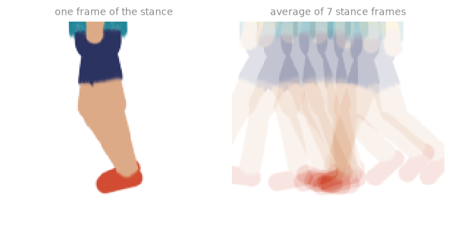
The planted shoe is as smeared as the rest of the leg. It never stood still.
2. When is a foot planted?#
A planted foot is low and slow. The obvious detector thresholds both, frame by frame: \(c_f(t) = [h_f(t) < h_\text{on}] \wedge [v_f(t) < v_\text{on}]\), where \(v_f\) is the horizontal sole speed. On tracked motion this flickers, because noise carries the height and the speed back and forth across the thresholds.
Hysteresis fixes the flicker with a second, looser pair of thresholds. A foot becomes planted when it is below \(h_\text{on}\) and slower than \(v_\text{on}\). It then stays planted until it is clearly up or clearly moving: above \(h_\text{off} > h_\text{on}\) or faster than \(v_\text{off} > v_\text{on}\). Noise that is smaller than the gap between the two thresholds can no longer switch the label. Runs shorter than a few frames are dropped.
Note the speed thresholds. They are far above zero, because the detector has to recognise a planted foot before its slide has been removed.
con_naive = mo.detect_contact(f_t.height, f_t.speed, hysteresis=False, min_len=1, **DETECT)
con_det = mo.detect_contact(f_t.height, f_t.speed, **DETECT)
fig, ax = plt.subplots(figsize=(9.0, 2.6))
rows = [("reference (clean walk)", con_ref, cu.COLORS["truth"]), ("one threshold per frame", con_naive, cu.COLORS["error"]),
("with hysteresis", con_det, cu.COLORS["contact"])]
ticks = []
for r, (label, con, colour) in enumerate(rows):
for foot in range(2):
y = -(2.4 * r + foot)
ax.broken_barh([(a, b - a) for a, b in mo.runs(con[:, foot])], (y - 0.4, 0.8), color=colour)
ticks.append((y, f"{label}, {'L' if foot == 0 else 'R'}"))
ax.set_yticks([t[0] for t in ticks]); ax.set_yticklabels([t[1] for t in ticks]); ax.set_xlabel("frame")
ax.set_xlim(0, len(poses)); ax.grid(axis="y", visible=False)
n_runs = lambda con: sum(len(mo.runs(con[:, foot])) for foot in range(2))
agree = lambda con: float((con == con_ref).float().mean())
print(f"planted runs: reference {n_runs(con_ref)}, per-frame thresholds {n_runs(con_naive)}, hysteresis {n_runs(con_det)}")
print(f"frames that agree with the reference: per-frame {agree(con_naive):.0%}, hysteresis {agree(con_det):.0%}")
assert n_runs(con_naive) > n_runs(con_det) and agree(con_det) > agree(con_naive)
planted runs: reference 5, per-frame thresholds 12, hysteresis 6
frames that agree with the reference: per-frame 92%, hysteresis 95%
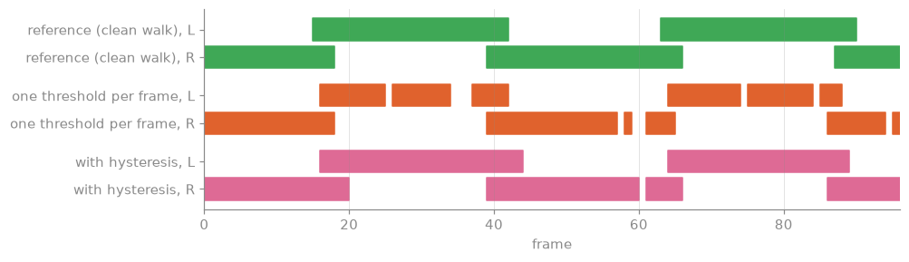
The per-frame detector breaks each stance into pieces. With hysteresis the runs are whole again and closer to
the reference, though not identical to it: where the tracked foot floats a few centimetres, no height
threshold can know it should have been on the floor. Every later step inherits these labels. From here on the
fix uses the detected labels con_det, and the score uses the reference labels con_ref, so that all
variants are scored on the same frames.
3. The cheapest fix moves the whole body#
If the planted foot moved by \(\Delta\mathbf{s}\) between two frames, move the whole body back by \(-\Delta\mathbf{s}\). Summed over time this gives a new root trajectory, and it also sets the root height so that the planted sole sits on the floor. This is a root lock. It changes three numbers per frame and no joint rotation.
poses_l, trans_l = mo.root_lock(poses_t, trans_t, con_det)
s_lock, p_lock = report("tracked + root lock", poses_l, trans_l)
both = con_ref.all(1)
f_l = mo.feet(poses_l, trans_l, fps=FPS)
single = mo.foot_slide(f_l.xz, con_ref & ~both[:, None], FPS)
double = mo.foot_slide(f_l.xz, con_ref & both[:, None], FPS)
print(f"after the root lock: slide p90 with one foot planted {single['p90']:.0f} mm/s, with both planted {double['p90']:.0f} mm/s")
assert s_lock["median"] < 0.05 * s_raw["median"]
assert double["p90"] > 10 * max(single["median"], 1.0)
tracked + root lock slide median 0.0 p90 251.5 mm/s | deepest penetration 19.6 mm
after the root lock: slide p90 with one foot planted 0 mm/s, with both planted 364 mm/s
The median slide is gone, and the 90th percentile is not. One translation can hold one foot still. When both feet are planted and the tracker moves them in different directions, the root lock can only cancel their average, and both still slide. (Some of the remaining slide also sits in frames that the detector missed.) The root lock also leaves penetration in the frames where the foot was not labelled as planted. To hold two feet at once, each leg has to change shape.
4. Two-bone IK: the knee sets the distance, the hip aims#
Inverse kinematics asks the opposite question to forward kinematics: given where the ankle should be, which joint rotations put it there? For a leg there is a closed-form answer.
Work in the plane of the leg. The thigh has length \(l_1\) and the shin \(l_2\). Let \(\phi\) be the knee flexion (zero for a straight leg). The distance \(d\) from hip to ankle depends on \(\phi\) only, by the law of cosines:
So the knee is solved first, from the distance to the target alone. Then the hip rotates the bent leg until the ankle lies on the line from hip to target. In the plane, with the target at forward offset \(t_z\) and height offset \(t_y\) from the hip, the hip angle is \(\theta = -(\gamma + \beta)\), where \(\gamma = \operatorname{atan2}(t_z, -t_y)\) is the direction of the target and \(\beta = \operatorname{atan2}(l_2 \sin\phi,\; l_1 + l_2\cos\phi)\) is the angle between the thigh and the hip–ankle line. The minus sign is the toy body’s convention: swinging the leg forward is a negative rotation about \(+x\) at the hip, and bending the knee is a positive one.
HIP, KNEE, ANKLE = (cu.joint_index(n) for n in mo.LEGS[0]) # the left leg
REST = cu.body.REST_JOINTS
L1, L2 = float((REST[KNEE] - REST[HIP]).norm()), float((REST[ANKLE] - REST[KNEE]).norm())
def planar_ik(tz, ty, backward=False):
"""Hip angle and knee flexion (radians) that put the ankle at (tz forward, ty up) from the hip."""
d2 = torch.as_tensor(tz * tz + ty * ty)
phi = torch.acos((d2 - L1 * L1 - L2 * L2) / (2 * L1 * L2)) # law of cosines
if backward:
phi = -phi # the other root of the same equation
beta = torch.atan2(L2 * torch.sin(phi), L1 + L2 * torch.cos(phi))
gamma = math.atan2(tz, -ty)
return -(gamma + beta), phi
def leg_pose(theta, phi):
pose, _ = cu.zero_pose()
pose[HIP, 0], pose[KNEE, 0] = theta, phi
return pose
target = (0.25, -0.55) # 25 cm forward, 55 cm below the hip
theta, phi = planar_ik(*target)
_, joints = cu.forward_kinematics(leg_pose(theta, phi))
reached = joints[ANKLE] - joints[HIP]
print(f"hip {math.degrees(theta):.1f} deg, knee {math.degrees(phi):.1f} deg | "
f"ankle lands at z {float(reached[2]):.3f}, y {float(reached[1]):.3f}")
assert abs(float(reached[2]) - target[0]) < 1e-5 and abs(float(reached[1]) - target[1]) < 1e-5
hip -68.3 deg, knee 85.1 deg | ankle lands at z 0.250, y -0.550
Forward kinematics confirms the answer. Three things can still go wrong, and all three show up in real motion.
The equation has two roots. \(-\phi\) gives the same distance with the knee bent backwards. Both reach the target. Only one is a leg.
The target may be out of reach. If \(d > l_1 + l_2\) the argument of the arccosine exceeds one and the result is not a number.
Near full extension the knee is infinitely sensitive. The slope \(\mathrm{d}\phi/\mathrm{d}d\) grows without bound as \(d \to l_1 + l_2\), so a millimetre of target noise becomes degrees of knee motion, and a hard cut-off at full reach makes the knee snap.
theta_b, phi_b = planar_ik(*target, backward=True)
theta_far, phi_far = planar_ik(0.60, -0.70) # 92 cm away; the leg is 82 cm long
print("unreachable target without a guard: knee =", float(phi_far))
assert math.isnan(float(phi_far))
d_max = L1 + L2
d = torch.linspace(0.55, 0.90, 400)
phi_of = lambda dist: torch.rad2deg(torch.acos(((dist ** 2 - L1 ** 2 - L2 ** 2) / (2 * L1 * L2)).clamp(-1, 1)))
phi_hard = phi_of(d.clamp(max=d_max))
phi_soft = phi_of(mo.soft_clamp(d, 0.998 * d_max, soft=0.03))
fig, axes = plt.subplots(1, 2, figsize=(9.0, 3.4))
ax = axes[0]
for (th, ph), colour, label in (((theta, phi), cu.COLORS["skeleton"], "knee forward"),
((theta_b, phi_b), cu.COLORS["error"], "knee backward (same ankle)")):
j = cu.to_np(cu.forward_kinematics(leg_pose(th, ph))[1])
ax.plot(j[[HIP, KNEE, ANKLE], 2], j[[HIP, KNEE, ANKLE], 1], "-o", color=colour, label=label)
hip_xy = cu.to_np(REST[HIP])
ax.plot(hip_xy[2] + target[0], hip_xy[1] + target[1], "x", ms=10, mew=2.5, color=cu.COLORS["contact"], label="target")
ax.set_aspect("equal"); ax.set_xlim(-0.2, 1.0); ax.set_xlabel("forward z (m)"); ax.set_ylabel("height y (m)")
ax.legend(fontsize=8, loc="center right")
ax = axes[1]
ax.plot(cu.to_np(d), cu.to_np(phi_hard), color=cu.COLORS["error"], label="hard limit at full reach")
ax.plot(cu.to_np(d), cu.to_np(phi_soft), color=cu.COLORS["skeleton"], label="soft limit")
ax.axvline(d_max, color=cu.COLORS["contact"], ls=":", label="full reach")
ax.set_xlabel("hip-to-target distance d (m)"); ax.set_ylabel("knee flexion (deg)"); ax.legend(fontsize=8);
unreachable target without a guard: knee = nan
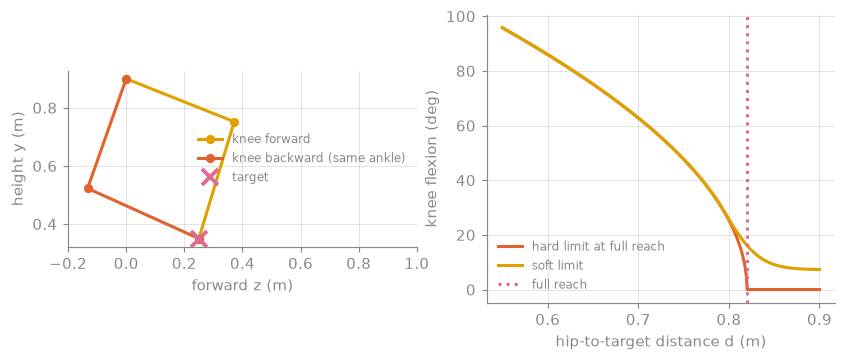
The guards are short. Take the positive root, so the knee bends the natural way. Replace the wanted distance \(d\) by a soft clamp that follows \(d\) until shortly before full reach and then levels off smoothly just below it. An unreachable target then gives a nearly straight leg that points at the target, and the curve on the right has no corner.
In three dimensions one more choice appears. The knee can swing around the hip–ankle line without moving the
ankle. mo.two_bone_ik resolves this by changing the input pose as little as possible: it adjusts the knee
flexion, then applies the smallest rotation at the hip that brings the ankle onto the hip–target line. That
rotation adds no twist, so the knee keeps pointing where it pointed. Last, the ankle rotation is recomputed so
that the foot keeps its orientation in the world. The next cell checks the library against the planar formula,
and checks the guards.
pose0, trans0 = cu.zero_pose()
ankles = mo.feet(pose0[None], trans0[None]).ankle # (1, 2, 3) current ankle positions
goal = ankles.clone()
goal[0, 0] = REST[HIP] + torch.tensor([0.0, target[1], target[0]])
solved, info = mo.two_bone_ik(pose0[None], trans0[None], goal)
print(f"library vs planar formula: hip {float(solved[0, HIP, 0] - theta):+.1e} rad, knee {float(solved[0, KNEE, 0] - phi):+.1e} rad")
assert abs(float(solved[0, HIP, 0] - theta)) < 1e-4 and abs(float(solved[0, KNEE, 0] - phi)) < 1e-4
assert float((solved[0, cu.joint_index("r_hip")] - pose0[cu.joint_index("r_hip")]).abs().max()) < 1e-6 # other leg untouched
far = ankles.clone()
far[0, 0] = REST[HIP] + torch.tensor([0.0, -0.70, 0.60]) # the unreachable target from above
solved_far, info_far = mo.two_bone_ik(solved, trans0[None], far) # start from the bent leg just solved
flex_far = float(mo.knee_flexion(solved_far)[0, 0])
print(f"unreachable target with guards: knee flexion {flex_far:.1f} deg, ankle stops {100 * float(info_far['residual'][0, 0]):.1f} cm short")
assert torch.isfinite(solved_far).all() and 0 < flex_far < 15
library vs planar formula: hip +0.0e+00 rad, knee -1.2e-07 rad
unreachable target with guards: knee flexion 7.3 deg, ankle stops 10.4 cm short
5. Pin the planted foot, and blend the pin#
A foot lock turns contact labels into ankle targets. For every planted run of a foot:
the sole centre is held at the horizontal position where it landed, the first frame of the run;
the lowest point of the sole is put on the floor.
The difference between that and where the sole is now is a correction \(\boldsymbol{\delta}_f(t)\), added to the ankle position and handed to the IK. The foot is rigid below the ankle and keeps its orientation, so moving the ankle by \(\boldsymbol{\delta}\) moves the sole by \(\boldsymbol{\delta}\).
What happens at the end of a run? If the correction is simply switched off, the foot jumps back to its
uncorrected path in one frame. ramp=0 does exactly that:
def release_jump(info, contact):
"""Largest one-frame change of the ankle correction outside planted frame pairs, in mm."""
c = info["correction"]
step = (c[1:] - c[:-1]).norm(dim=-1)
return 1000 * float(step[~(contact[1:] & contact[:-1])].max())
poses_hard, info_hard = mo.pin_feet(poses_l, trans_l, con_det, fps=FPS, ramp=0)
poses_ik, info_ik = mo.pin_feet(poses_l, trans_l, con_det, fps=FPS, ramp=4)
jump_hard, jump_soft = release_jump(info_hard, con_det), release_jump(info_ik, con_det)
print(f"largest one-frame jump of a correction at a pin boundary: switched {jump_hard:.1f} mm, blended {jump_soft:.1f} mm")
assert jump_soft < 0.6 * jump_hard
fig, ax = plt.subplots(figsize=(9.0, 2.8))
for a, b in mo.runs(con_det[:, 0]):
ax.axvspan(a, b - 1, color=cu.COLORS["contact"], alpha=0.18, lw=0, label="planted (detected)" if a == mo.runs(con_det[:, 0])[0][0] else None)
ax.plot(frames, 100 * cu.to_np(info_hard["correction"][:, 0].norm(dim=-1)), color=cu.COLORS["error"], label="switched on and off")
ax.plot(frames, 100 * cu.to_np(info_ik["correction"][:, 0].norm(dim=-1)), color=cu.COLORS["skeleton"], label="blended over 4 frames")
ax.set_xlabel("frame"); ax.set_ylabel("left ankle correction (cm)")
ax.legend(fontsize=8, ncol=3, loc="lower center", bbox_to_anchor=(0.5, 1.0));
largest one-frame jump of a correction at a pin boundary: switched 70.7 mm, blended 29.2 mm
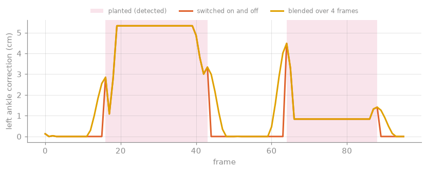
Inside a run the correction is nearly constant, because after the root lock the foot already stands still for most of the run, a few centimetres from where it landed. The orange curve drops to zero the moment a run ends: a pop of centimetres in a single frame. The blended version carries the correction past the end of the run and fades it out over a few frames of the swing, where the foot is moving fast anyway and the catch-up is hidden. Between two runs that are close together it cross-fades from one anchor to the next. (The floor rule also acts outside the runs: a sole below the floor is lifted to it in every frame.)
Now the whole chain on the tracked walk, scored on the same reference labels each time.
report("tracked walk", poses_t, trans_t)
report("+ root lock", poses_l, trans_l)
s_ik, p_ik = report("+ root lock + leg IK", poses_ik, trans_l)
flex = mo.knee_flexion(poses_ik)
flips = mo.pole_flips(poses_l, trans_l, poses_ik, trans_l, min_bend=0.03)
solved = info_ik["solved"]
print(f"\nleg IK changed {float(solved.float().mean()):.0%} of the foot-frames; the rest are bit-identical: "
f"{bool((poses_ik[~solved.any(1)] == poses_l[~solved.any(1)]).all())}")
print(f"smallest knee flexion in solved frames {float(flex[solved].min()):.2f} deg | knee flips {flips} | "
f"largest unreachable remainder {1000 * float(info_ik['residual'].max()):.1f} mm")
assert s_ik["median"] < 0.05 * s_raw["median"] and s_ik["p90"] < s_lock["p90"]
assert p_ik["max_mm"] < 1.0 and flips == 0 and float(flex[solved].min()) > -0.01
tracked walk slide median 487.2 p90 848.1 mm/s | deepest penetration 34.2 mm
+ root lock slide median 0.0 p90 251.5 mm/s | deepest penetration 19.6 mm
+ root lock + leg IK slide median 0.0 p90 62.9 mm/s | deepest penetration 0.0 mm
leg IK changed 80% of the foot-frames; the rest are bit-identical: True
smallest knee flexion in solved frames 0.23 deg | knee flips 0 | largest unreachable remainder 40.7 mm
Slide in the median is gone, penetration is gone, no knee bends backwards and none flips sides. The 90th percentile improves but does not reach zero. It lives in the frames that the reference calls planted and the detector did not, and in targets the leg could not reach. The published numbers of the real project have the same shape: a median near zero and a 90th percentile that stays, because only part of the frames get pinned.
The stance average from Section 1, before and after:
cu.show_images([avg_raw, stance_average(poses_ik, trans_l)],
["tracked: the planted shoe smears", "root lock + leg IK: the shoe is sharp"], size=3.0);
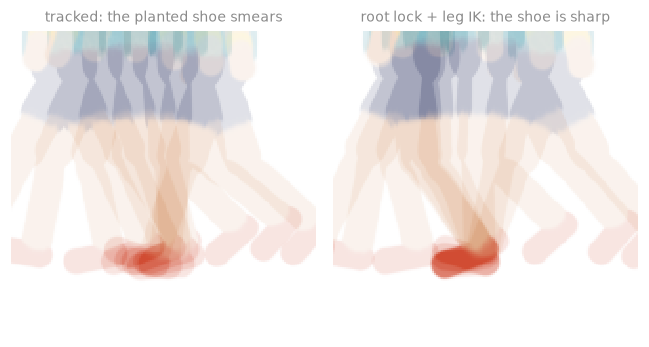
f_ik = mo.feet(poses_ik, trans_l, fps=FPS)
fig, ax = plt.subplots(figsize=(9.0, 3.0))
for a, b in mo.runs(con_det[:, 0]):
ax.axvspan(a, b - 1, color=cu.COLORS["contact"], alpha=0.18, lw=0, label="planted (detected)" if a == mo.runs(con_det[:, 0])[0][0] else None)
ax.plot(frames, cu.to_np(f_t.xz[:, 0, 1]), color=cu.COLORS["error"], label="tracked")
ax.plot(frames, cu.to_np(f_ik.xz[:, 0, 1]), color=cu.COLORS["skeleton"], label="root lock + leg IK")
ax.set_xlabel("frame"); ax.set_ylabel("left sole, forward position z (m)"); ax.legend(fontsize=8);
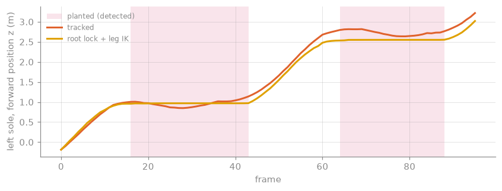
Inside the shaded runs the corrected sole draws flat steps where the tracked one keeps creeping. The corrected walk also covers less ground: the root now travels only as far as the steps carry it.
6. A caveat: world space and the screen are different measurements#
Everything above is measured in world coordinates. A viewer sees pixels. The real project measured both and
found that leg IK took the median world-space slide to nearly zero while the on-screen slide of the same feet
did not change (the numbers are in In the real pipeline). So measure both here too.
mo.screen_slide projects a point on each sole into a camera and reports its motion in pixels per frame over
planted frames. We use two cameras: one that stands still, and one that travels with the walker, as a
follow shot would.
SIZE = 256
z_all = float(trans_l[:, 2].mean())
cam_static = cu.look_at(eye=(7.0, 0.9, z_all), target=(0.0, 0.9, z_all), fov_deg=32, size=SIZE)
cam_follow = [cu.look_at(eye=(7.0, 0.9, float(z)), target=(0.0, 0.9, float(z)), fov_deg=32, size=SIZE) for z in trans_l[:, 2]]
rows = {}
for label, (p, t) in {"tracked": (poses_t, trans_t), "root lock + leg IK": (poses_ik, trans_l)}.items():
f = mo.feet(p, t, fps=FPS)
rows[label] = (mo.foot_slide(f.xz, con_ref, FPS)["median"] / FPS, # mm per frame
mo.screen_slide(cam_static, f.points, con_ref)["median"],
mo.screen_slide(cam_follow, f.points, con_ref)["median"])
print(f"{label:<20s} world {rows[label][0]:6.2f} mm/frame | static camera {rows[label][1]:5.2f} px/frame | "
f"follow camera {rows[label][2]:5.2f} px/frame")
fig, axes = plt.subplots(1, 3, figsize=(9.0, 2.8))
for ax, k, unit in zip(axes, range(3), ("world slide (mm/frame)", "static camera (px/frame)", "follow camera (px/frame)")):
ax.bar([0, 1], [rows["tracked"][k], rows["root lock + leg IK"][k]], color=[cu.COLORS["error"], cu.COLORS["skeleton"]])
ax.set_xticks([0, 1]); ax.set_xticklabels(["tracked", "lock + IK"]); ax.set_ylabel("median " + unit)
fig.tight_layout()
assert rows["root lock + leg IK"][1] < 0.1 * rows["tracked"][1] # static camera agrees with the world
assert rows["root lock + leg IK"][2] > 0.5 * rows["tracked"][2] # follow camera barely notices
tracked world 16.24 mm/frame | static camera 0.91 px/frame | follow camera 2.05 px/frame
root lock + leg IK world 0.00 mm/frame | static camera 0.00 px/frame | follow camera 2.17 px/frame
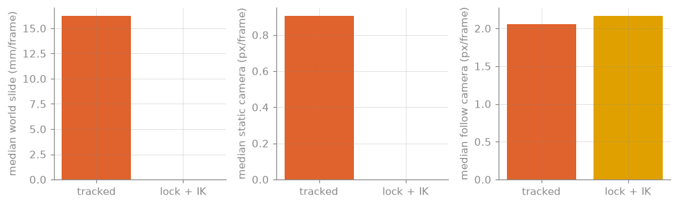
With a camera that stands still, the two measurements agree on the toy: the pinned foot stops in the world and on the screen. With the follow camera they part ways. A foot that is perfectly still on the floor travels across the image at the camera’s speed, the pixel number is dominated by that travel, and the pin hardly changes it. Neither number is wrong. They answer different questions, and only one of them is what the viewer sees. The toy does not reproduce the real project’s finding with a static camera, and the repository does not publish a cause for it, so do not read this section as its explanation. Read it as a rule: decide on the screen-space measurement before trusting a world-space gain. Part 8 returns to measurements that can mislead.
From the real system#
Foot sliding, before and after leg IK. The author’s standard-track avatar driven by a dance motion on the project’s synthetic floor, rendered twice with the same camera: without leg IK (the floor fix and root foot lock are still on) and with two-bone leg IK pinning the planted feet. Watch a standing foot against the floor tiles: without IK it drifts while it should be planted; with IK it stays put and lifts off when the motion lifts it. On the four-avatar dance the repository reports the median foot slide dropping from 112–159 to 27–35 mm/s (docs/leg_ik.md).
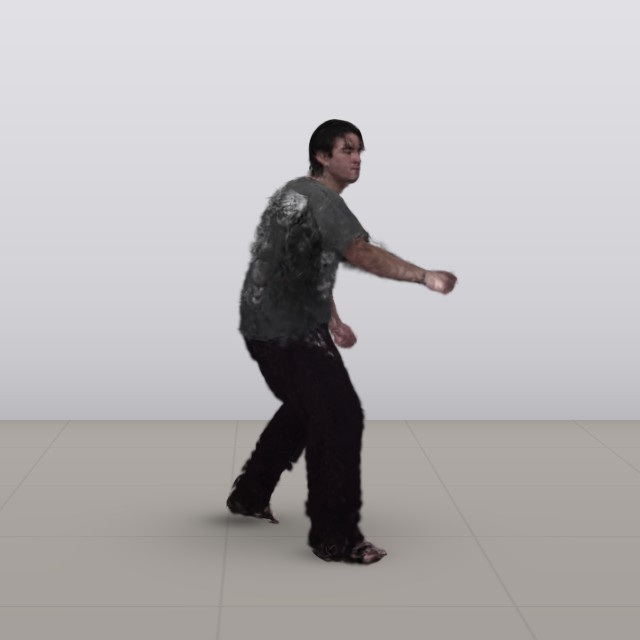
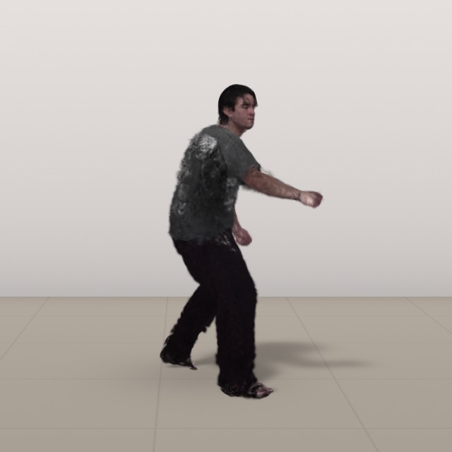
Grounding by compositing. The same rendered frame composited two ways: the original path, and the look that tints the set towards the capture’s illuminant and casts the posed body’s shadow onto the floor with contact darkening under the soles. Nothing about the avatar changes. Notice how much of “standing on the floor” comes from the shadow rather than from the feet (docs/look.md).
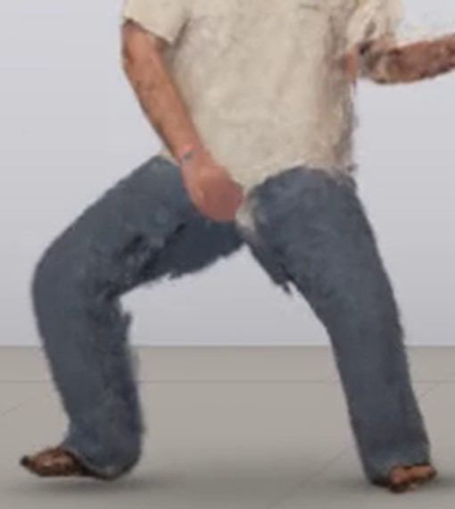
A pose the capture never showed. A wide dance stance on the author’s earlier avatar (hip close-up, cropped from a 720p render). Shell vertices on the inner thigh were skinned to the other leg, which cannot be seen in the capture’s narrow stances; when the legs spread, their Gaussians stretch across the gap. The fix re-skins those vertices and ramps in only beyond the capture’s range of thigh spread (docs/webbing.md).
In the real pipeline#
The repository drives its avatars with motion from a video tracker and with a few hand-written moves. Both needed the steps of this lesson, in the same order: floor fix, root-level foot lock, then leg IK.
Step |
Where |
What differs from the toy |
|---|---|---|
Contact labels |
|
Labels come from the dancer’s joints and from the tracker, and the two sets are combined |
Floor fix and root lock |
|
The floor height comes from the avatar’s own sole vertices |
Two-bone leg IK |
|
Soles are mesh vertices; a yaw lock holds the foot’s heading; a pin is cut when the original foot drifts too far |
Lift-off release |
docs/leg_ik.md |
The labels are known offline, so a pin ends when the original foot is about to rise by 2 cm, which removes late, sudden kicks |
Foot metrics |
|
Slide of the sole centre and of the fastest sole vertex, float, penetration, knee flexion, pole flips |
Hand-written moves |
|
A per-frame least-squares leg solve instead of the closed form |
Published results, with their sources:
On one solo driving clip, the median world-space slide over contact frames went from 1.092 cm/frame (raw) to 0.575 (root lock) to 0.015 (lock, leg IK and support), while the 90th percentile stayed at 1.47 cm/frame because only about 45–50 % of frames get pinned (docs/plus-feet.md, RESULTS.md).
On-screen slide on that clip was 17.6 px/frame before and 17.1 after: unchanged (RESULTS.md; “What we learned”, item 6, in the README). The project calls the IK “a leg clean-up, not yet a skating fix” (docs/RESEARCH_DIRECTIONS.md).
No penetration below 2 cm, no knee hyperextension and no pole flip in any reported run (docs/plus-feet.md).
The IK is not free: it adds sharp corrections to the leg joints. How to measure that, and how the first attempt at measuring it went wrong, is the subject of Lesson 7b.
The hand-written moves had the same disease as the toy walk. Before the leg solve, a planted foot in the jumping jacks drifted 14 sprite pixels and went 42 mm into the floor (docs/MOTION.md).
The toy differs in the usual ways: capsule feet instead of a shoe mesh, synthetic tracking noise instead of a tracker, and contact labels we can check against a known clean motion.
Summary#
Joint rotations and a root translation do not know about the floor. Procedural motion and tracked motion both slide, and tracked motion also sinks and floats.
Slide is the horizontal speed of a planted sole; it needs a contact label. Detect contact with height and speed thresholds, and use hysteresis so that noise cannot switch the label.
A root lock holds one foot with one translation. Two planted feet that disagree need the legs to change.
Two-bone IK is closed form: the law of cosines gives the knee from the hip–target distance, and the smallest hip rotation aims the leg. Take the forward root, limit the reach softly, and keep the foot’s orientation.
Blend a pin in and out, or the foot pops when the pin lets go.
Report the on-screen number next to the world-space number. They can disagree.
Exercises#
Retargeting. Play the clean procedural walk on a body whose legs are 12 % shorter, by passing a modified rest skeleton as
rest=tomo.feet,mo.root_lockandmo.pin_feet. How much does it float, and what do the root lock and the IK do about it?Pin with
anchor="mean"instead ofanchor="onset". Which one needs the smaller corrections, and why might a pipeline still prefer the onset?Lower
v_onandv_offto 0.2 and 0.3 m/s and detect contact on the tracked walk again. What happens to the planted runs, and why is that a trap?
Solution 1
rest = cu.body.REST_JOINTS.clone()
for side in ("l", "r"):
hip, knee, ankle = (cu.joint_index(f"{side}_{n}") for n in ("hip", "knee", "ankle"))
rest[knee, 1] = rest[hip, 1] + 0.88 * (cu.body.REST_JOINTS[knee, 1] - cu.body.REST_JOINTS[hip, 1])
rest[ankle, 1] = rest[knee, 1] + 0.88 * (cu.body.REST_JOINTS[ankle, 1] - cu.body.REST_JOINTS[knee, 1])
f_short = mo.feet(poses, trans, rest=rest)
print("float of the lowest sole, cm:", 100 * float(f_short.height.min(1).values.median()))
con = mo.detect_contact(f_short.height - f_short.height.min(), f_short.speed, **DETECT)
p1, t1 = mo.root_lock(poses, trans, con, rest=rest)
p2, info = mo.pin_feet(p1, t1, con, rest=rest)
f2 = mo.feet(p2, t1, rest=rest)
print("slide median, mm/s:", mo.foot_slide(f_short.xz, con)["median"], "->", mo.foot_slide(f2.xz, con)["median"])
The same joint angles on shorter legs leave the feet hanging about ten centimetres above the floor, and the steps are now too short for the root’s speed, so the feet still skate. The root lock lowers the body and matches the root’s travel to the shorter steps; the IK then removes what is left in double support. Retargeting is a contact problem as much as a rotation problem.
Solution 2
_, info_mean = mo.pin_feet(poses_l, trans_l, con_det, anchor="mean")
print(float(info_ik["correction"].norm(dim=-1).mean()), float(info_mean["correction"].norm(dim=-1).mean()))
The mean position of a run is the point closest to all of its frames, so the corrections are smaller. The onset is where the foot actually touched down. With the mean, the foot has to be moved before it lands so that it lands on the anchor, which changes the landing; with the onset, the landing is untouched and the whole correction happens while the foot is on the floor.
Solution 3
strict = mo.detect_contact(f_t.height, f_t.speed, h_on=0.03, h_off=0.06, v_on=0.2, v_off=0.3)
print(float(strict.float().mean()), float(con_det.float().mean()))
Most planted frames disappear, because a planted foot in this motion slides faster than the new thresholds. The detector would report that there is almost no contact and therefore almost nothing to fix. A speed threshold must tolerate the slide that the fix is about to remove.
References#
The real implementation and its record:
gsmfit/leg_ik.py, docs/leg_ik.md, docs/plus-feet.md, docs/MOTION.md.The tracker whose motion the real pipeline cleans up: [Shen et al., 2024]. The body model whose legs it solves: [Loper et al., 2015].